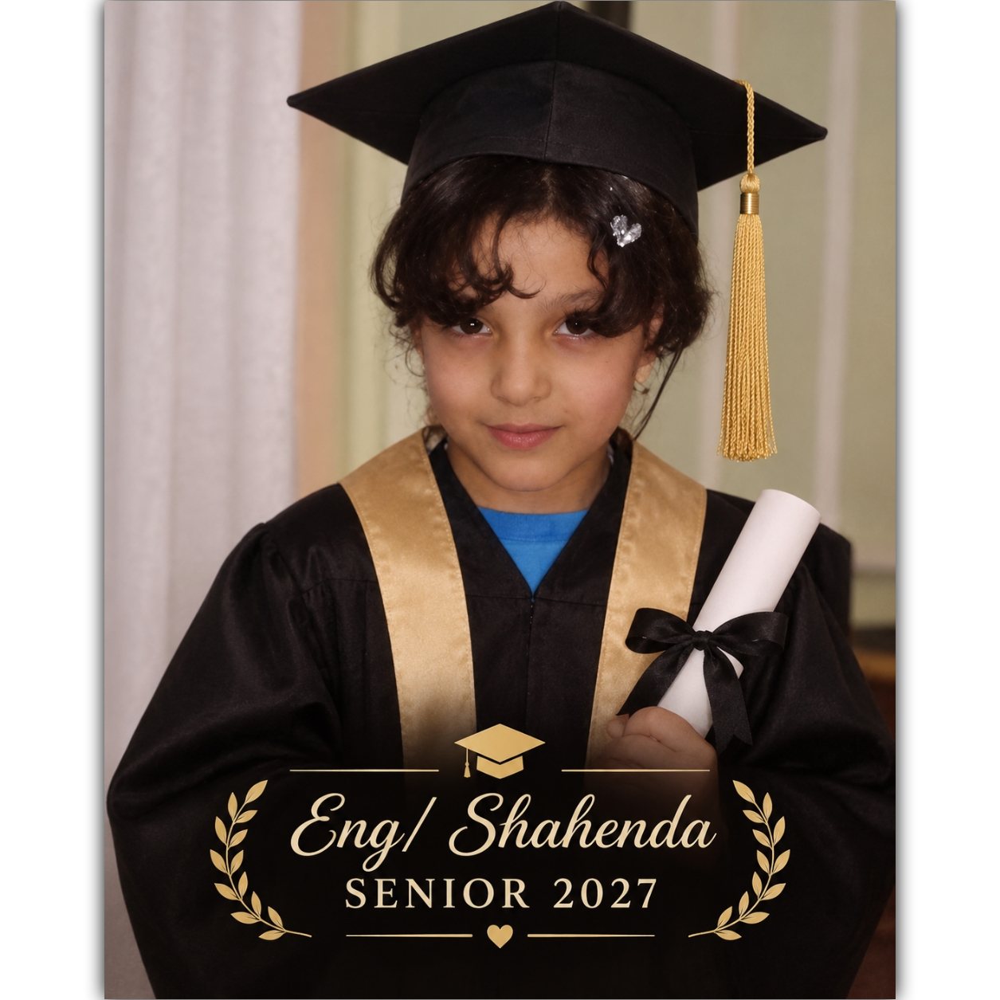

Web Development
Exploring how websites are designed, structured, and built.
HTMLCSSJavaScriptAcademic Portfolio · Computer Science
Fourth-Year Student at the Faculty of Computers and Information. Exploring technology, developing new skills, and building a foundation for a future in the world of computing.

Introduction
A growing journey in technology and learning.
I am a fourth-year student at the Faculty of Computers and Information, interested in learning how technology can solve problems and create meaningful digital experiences.
This portfolio presents my academic background, technical interests, projects, and achievements as I continue to develop my knowledge and practical experience.
Academic Background
The foundation behind my professional journey.
University Education
Specialization: Information Systems
Studying at the Faculty of Computers and Information, specializing in Information Systems, with an interest in technology, data, and developing practical digital solutions.
Continuous Development
Continuously developing technical, analytical, and problem-solving skills through coursework and practical learning.
Technical Interests
Areas to develop and showcase as experience grows.
Exploring how websites are designed, structured, and built.
HTMLCSSJavaScriptBuilding problem-solving skills through programming concepts and practice.
Problem SolvingAlgorithmsExploring computing concepts and the technologies shaping digital experiences.
ComputingTechnologyNote: Listed technologies represent areas to explore and should be updated to reflect actual skills and experience.
Selected Work
A space for coursework, practical assignments, and personal projects.
Add a description of a website or web application you have actually created, including its purpose and tools.
PROJECT DETAILS TO BE ADDEDShowcase a programming assignment or application, describing the problem it solves and your contribution.
PROJECT DETAILS TO BE ADDEDPresent a research assignment, technical report, or academic activity when available.
PROJECT DETAILS TO BE ADDEDGrowth & Recognition
Qualifications and milestones can be presented here.
Add verified course certificates, training programs, and qualifications.
Highlight real academic accomplishments, awards, or competitions.
Include relevant student activities, volunteering, or teamwork experience.
Get In Touch
Interested in academic collaboration or technology projects? Contact information will be added here.
Back to Top ↑